1affaan-m/ECC
213,566 ★ · JavaScript · 更新于 2026-06-12 02:00 UTC
面向 Claude Code、Codex、OpenCode、Cursor 等 agent harness 的性能优化系统，覆盖 skills、记忆、安全和 research-first 开发。值得关注：它把跨 harness 的工程最佳实践打包成可迁移系统。
生成日期：2026 年 6 月 12 日（周五）
信息截止时间：2026-06-12 10:00（Asia/Shanghai）
作者：Xiaoyuan Liu、Jianhong Tu、Yuqi Chen、Siyuan Xie、Sihan Ren、Tianneng Shi、Gal Gantar、Evan Sandoval、Donghyun Lee、Daniel Miao、Peter J. Gilbert、Nick Hynes、Mauro Staver、Warren He、David Marn、Andrew Low、Xi Zhang、Elron Bandel、Michal Shmueli-Scheuer、Siva Reddy、Alexandre Drouin、Alexandre Lacoste、Ramayya Krishnan、Elham Tabassi、Yu Su、Victor Barres、Chenguang Wang、Wenbo Guo、Dawn Song。
链接：arXiv 摘要 · 论文 PDF · AgentBeats 项目页 · AgentX-AgentBeats Competition
选择理由：这是自上一份日报后发布的最新、且直接改变 Agent benchmark 集成方式的工作。它不再把 benchmark 固定在某个模型中心化 harness 中，而是把评测本身实现成可交互的 judge agent。
English. AgentBeats proposes Agentified Agent Assessment (AAA), an agent-agnostic evaluation architecture in which judge agents conduct assessments and subject agents expose their capabilities through standardized interfaces. A2A handles task management and MCP handles tool access, reducing benchmark-to-agent integrations from N×M to N+M. A five-month field study covering 298 judge agents in 12 categories and 467 subject agents demonstrates broad applicability, while a controlled coding-agent case study shows that benchmark outcomes depend materially on the model-harness pairing rather than on the model alone.
中文翻译。 AgentBeats 提出了“智能体化智能体评测”（AAA）：一种与具体智能体实现无关的评测架构，由 judge agent 执行评测，subject agent 通过标准接口暴露能力。A2A 负责任务管理，MCP 负责工具访问，使 benchmark 与 agent 之间的集成数量从 N×M 降为 N+M。为期五个月的实地研究覆盖 12 个类别中的 298 个 judge agent 与 467 个 subject agent，说明该架构具有广泛适用性；受控 coding-agent 案例进一步表明，评测结果显著取决于模型与 harness 的配对，而非只取决于模型本身。
将 benchmark 评测逻辑封装为 judge agent；用 A2A 管理任务、用 MCP 提供工具，从接口层分离评测逻辑和被测 agent。论文还定义了 Local、Remote、Hosted、Proxy、CI 五种运行模式。
DevEval 最优为 GPT-5.4 × Codex（94.8%）；SWE-Bench Pro 与 Terminal-Bench 2.0 最优为 Opus 4.7 × Claude Code（69.1%、68.5%）。原生模型-harness 配对在 6 次对比中赢得 5 次，平均高 5.3 个百分点。
它把“benchmark 适配每个 agent”的工作，变成“benchmark 和 agent 各自适配标准协议”。这有利于开放复现、私有 agent 评测、多智能体评测，以及更接近生产环境的比较。
Agent 化迁移仍有工程成本，并依赖 A2A/MCP 包装；竞赛样本存在自选择偏差；coding case study 总成本约 6,000 美元，覆盖面有限。结果更能证明 harness 协同适配的重要性，不能被解读为纯模型能力排名。
以下附上论文中的全部 8 幅 Figure 与 10 张 Table。为保持原始排版、避免密集表格转写错误，表格采用论文 PDF 的清晰截图；每项均链接至原始 PDF。
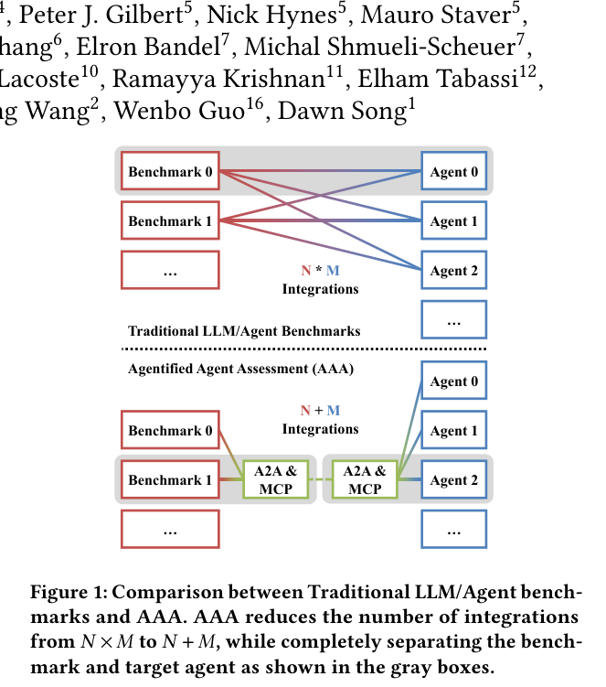
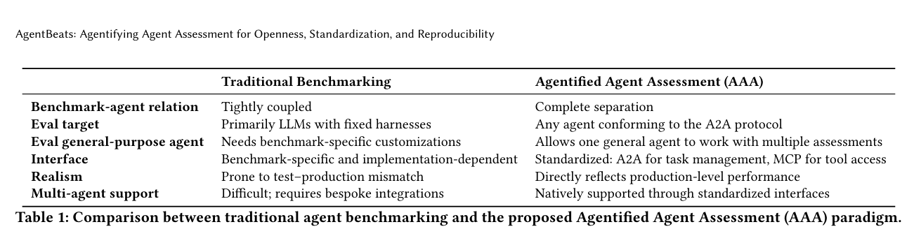
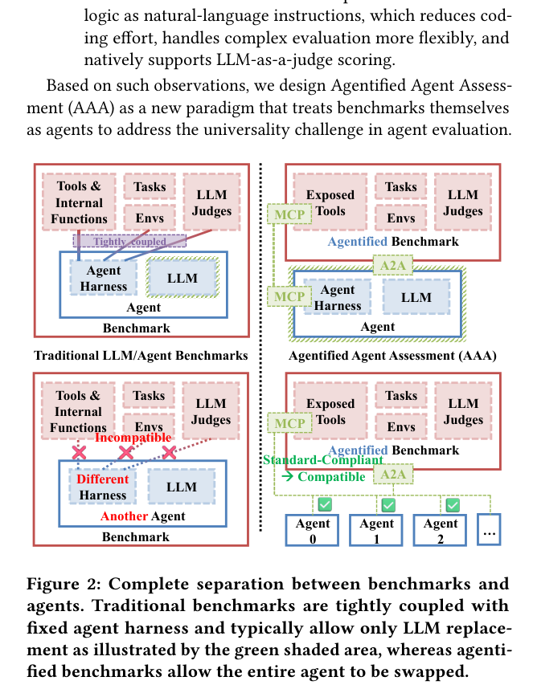
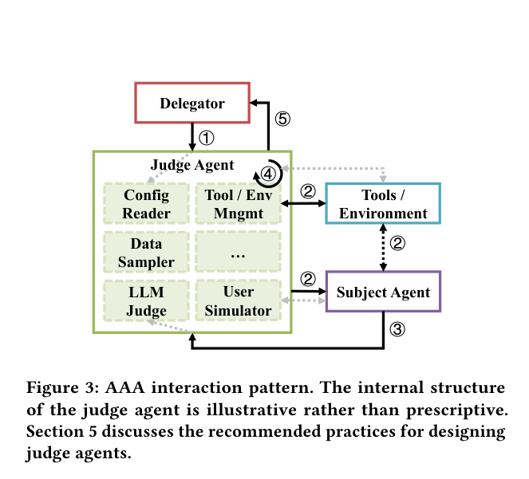
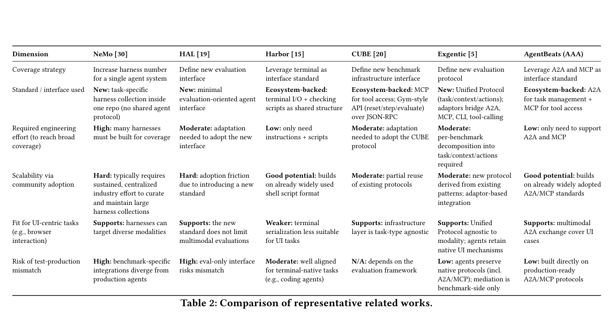
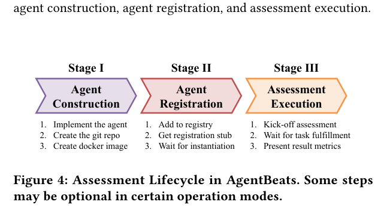
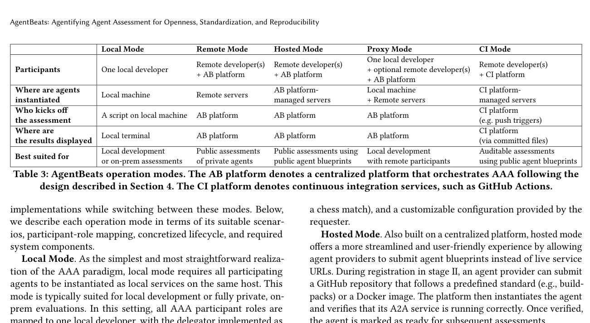
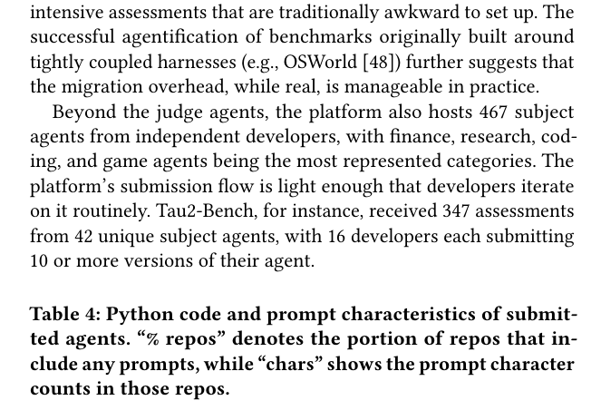
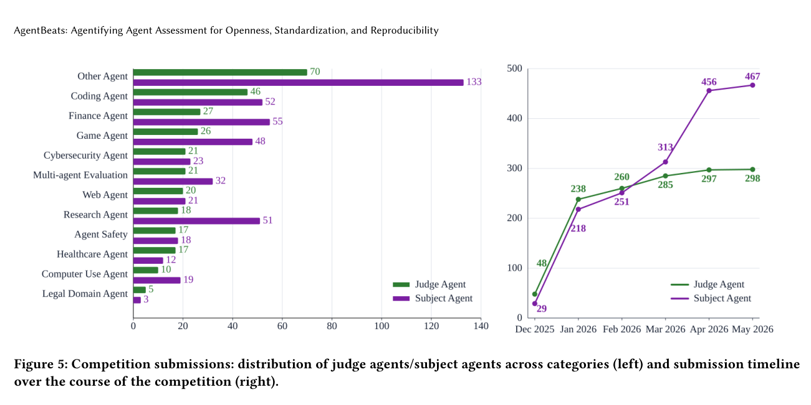
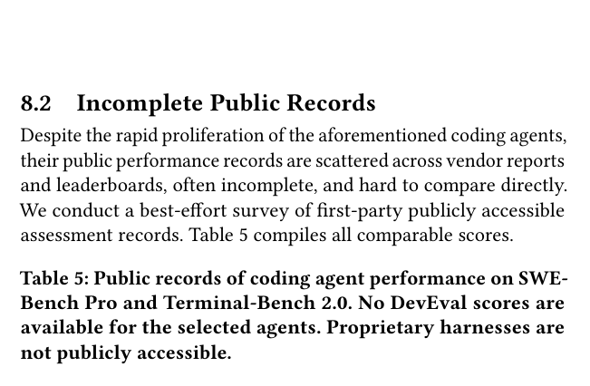
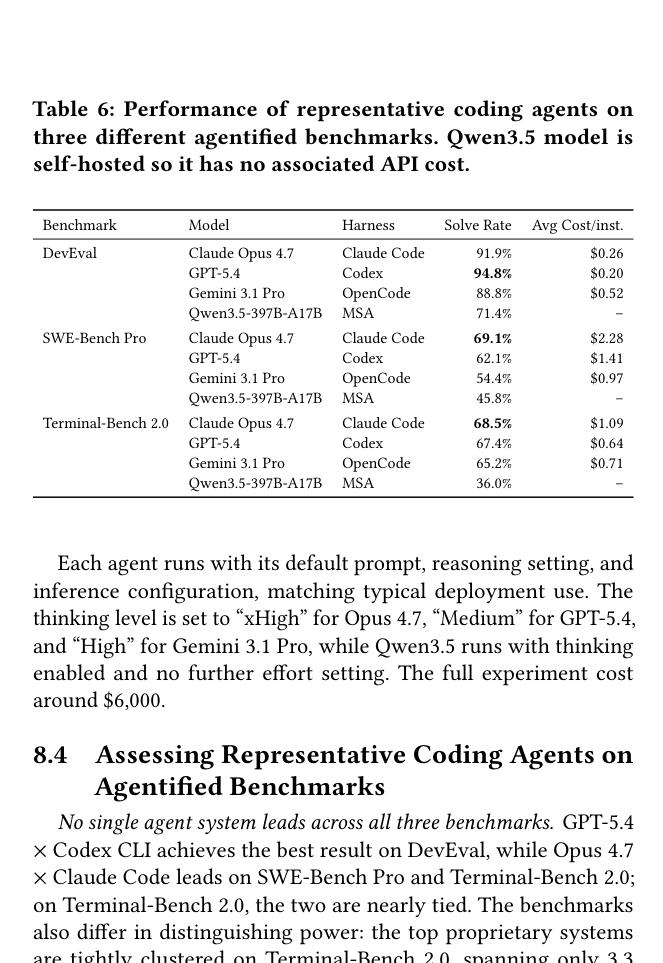
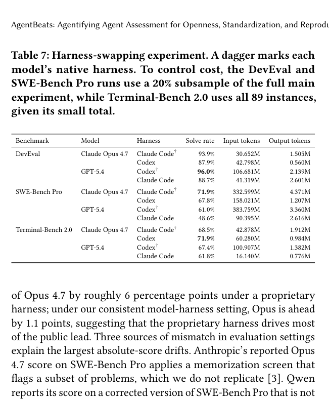
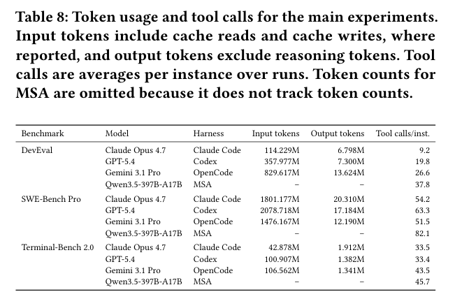
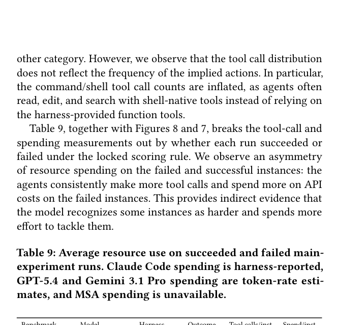
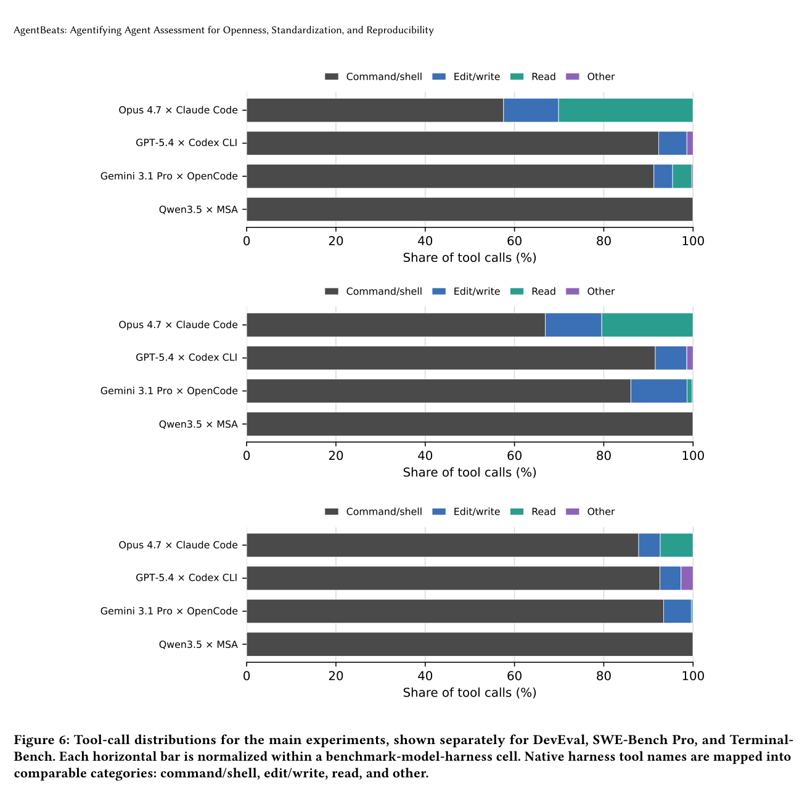
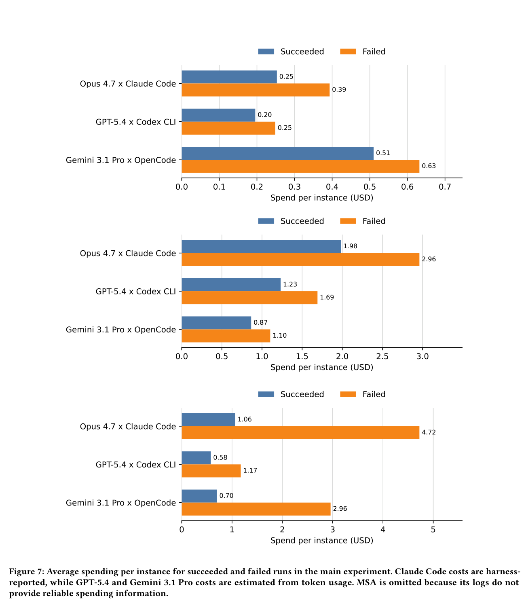
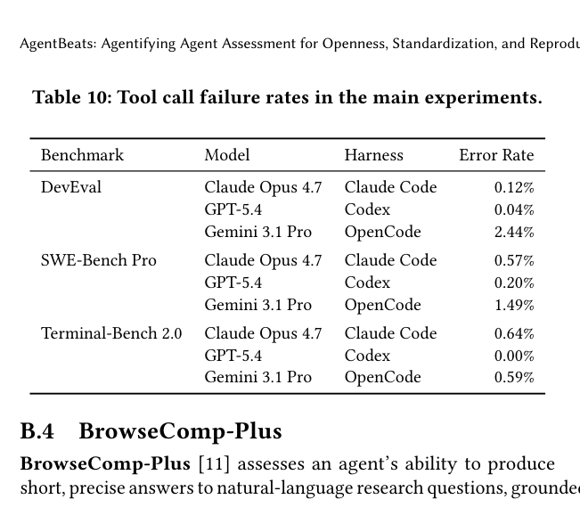
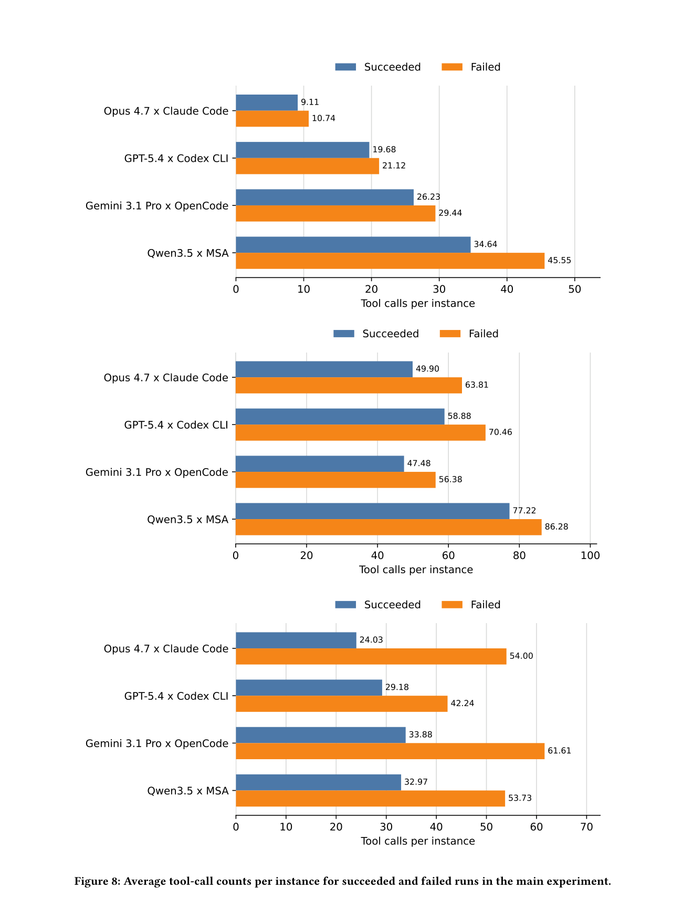
本次已拥有可比历史快照，因此采用严格可验证的净增值，而非 Trending 等代理指标。统计窗口为 2026-06-09 10:56 至 2026-06-12 10:00（Asia/Shanghai），约 71 小时；按当前 Star 减历史 Star 排序。
| # | 项目 | 用途 | 当前 Star | 约三日新增 | 语言 | 最近更新（UTC） |
|---|---|---|---|---|---|---|
| 1 | GordenSuperPPTSkills | 通过 Agent Skill 生成图片式 PPT，并转换为可编辑 PPTX。 | 790 | +351 | Python | 2026-06-12 02:00 |
| 2 | baoyu-design | 在 Cursor、Claude Code 等环境中运行的设计 Agent Skill，可生成 UI、原型、deck 与线框图。 | 775 | +244 | JavaScript | 2026-06-12 01:58 |
| 3 | guard-skills | 面向 coding agent 的质量门禁 skills，检查 AI 生成代码、测试和文档的常见失败模式。 | 571 | +97 | 未标注 | 2026-06-11 22:47 |
| 4 | AgentHarness | 用于 Apodex-1.0 深度研究 benchmark 的公开评测 harness。 | 122 | +73 | Python | 2026-06-12 01:51 |
| 5 | codex-chatgpt-control | 让 Codex agent 控制可见 ChatGPT Web 会话的非官方 SDK。 | 205 | +46 | JavaScript | 2026-06-12 01:11 |
观察：增长最集中在可直接复用的 Agent Skill，而非通用框架；设计/PPT 类 skills 两项合计净增 595 Star。AgentHarness 的绝对规模较小，但约三日增长达历史基数的 149%，值得持续观察。
筛选范围：AI Agent、Agent 架构、多智能体、评测、coding/computer-use agent、Agent Skill、MCP、工具链与运行时。已检查工作区内此前两份 morning-brief HTML，并排除其中任一 GitHub 板块出现过的仓库；以下按当前总 Star 降序。
213,566 ★ · JavaScript · 更新于 2026-06-12 02:00 UTC
面向 Claude Code、Codex、OpenCode、Cursor 等 agent harness 的性能优化系统，覆盖 skills、记忆、安全和 research-first 开发。值得关注：它把跨 harness 的工程最佳实践打包成可迁移系统。
192,110 ★ · TypeScript · 更新于 2026-06-12 02:01 UTC
可自托管的工作流自动化平台，原生支持 AI 能力并连接 400+ 服务。值得关注：它是 agent 工具调用、审批和业务系统落地的重要运行层。
191,054 ★ · Python · 更新于 2026-06-12 02:02 UTC
定位为“与你共同成长”的个人 agent，强调长期适应和能力积累。值得关注：代表从单次任务 agent 转向持续个性化 agent 的方向。
173,277 ★ · TypeScript · 更新于 2026-06-12 02:01 UTC
开源 coding agent。值得关注：AgentBeats 今日论文也使用 OpenCode 作为 harness，说明其既是产品，也正成为可研究、可替换的评测组件。
144,892 ★ · TypeScript · 更新于 2026-06-12 02:01 UTC
面向生产环境的 agentic workflow 开发平台。值得关注：把编排、模型接入、工具、观测和部署聚合在一个成熟平台中，适合观察 agent 从原型进入生产的工程边界。
2026-06-11 · 官方博客
OpenAI 宣布收购 Ona，重点是为长时间运行的 Codex agent 提供安全、持久的云开发环境。
2026-06-11 · 官方案例
展示研究人员如何使用 Codex 辅助构建、调试与运行黑洞模拟，体现 coding agent 向科研工作流延伸。
2026-06-10 · 官方公告
OpenAI 模型与 Codex 可通过 Oracle 云承诺进行采购与使用，降低企业现有云预算接入 agent 工具的摩擦。
Debug web apps with browser use in Codex（06-12）
Codex for Creatives（06-11）
Creating black hole simulations with Codex（06-11）
Codex for data science（06-09）
2026-06-09 · 官方模型公告
Anthropic 发布面向高难度知识工作与编码的新一代模型。公告把长期复杂任务能力和更强编码能力作为重点。
2026-06-09 · 官方视频
官方视频介绍 Fable 5，并强调其在复杂、长周期任务上的能力与安全措施。
morning-brief-2026-06-09.html 中的历史快照相减。窗口约 71 小时，不等同于自然日三天。morning-brief-test-2026-06-08.html 与 morning-brief-2026-06-09.html，并排除已出现仓库。相关性由仓库描述、主题与项目定位人工筛选；总 Star 不是质量或近期增长的直接指标。| 仓库 | 2026-06-09 快照 | 2026-06-12 快照 | 差值 |
|---|---|---|---|
| GordenSun/GordenSuperPPTSkills | 439 | 790 | +351 |
| JimLiu/baoyu-design | 531 | 775 | +244 |
| amElnagdy/guard-skills | 474 | 571 | +97 |
| ApodexAI/AgentHarness | 49 | 122 | +73 |
| adamallcock/codex-chatgpt-control | 159 | 205 | +46 |
| affaan-m/ECC | 无历史快照 | 213,566 | 不计算 |
| n8n-io/n8n | 无历史快照 | 192,110 | 不计算 |
| NousResearch/hermes-agent | 无历史快照 | 191,054 | 不计算 |
| anomalyco/opencode | 无历史快照 | 173,277 | 不计算 |
| langgenius/dify | 无历史快照 | 144,892 | 不计算 |
affaan-m/ECC、n8n-io/n8n、NousResearch/hermes-agent、anomalyco/opencode、langgenius/dify。
AgentBeats arXiv · AgentBeats · GitHub Repository Search · OpenAI News · OpenAI YouTube · Anthropic News · Anthropic YouTube
数据限制与不确定性：GitHub Star 会实时变化；“三日”窗口比 72 小时少约 1 小时；GitHub 搜索对超高 Star 项目和主题标签存在索引偏差；官方动态的发布日期按官方页面/RSS 显示时间记录；论文图表截图忠实呈现原文，但本简报的中文解释属于编辑性概括。